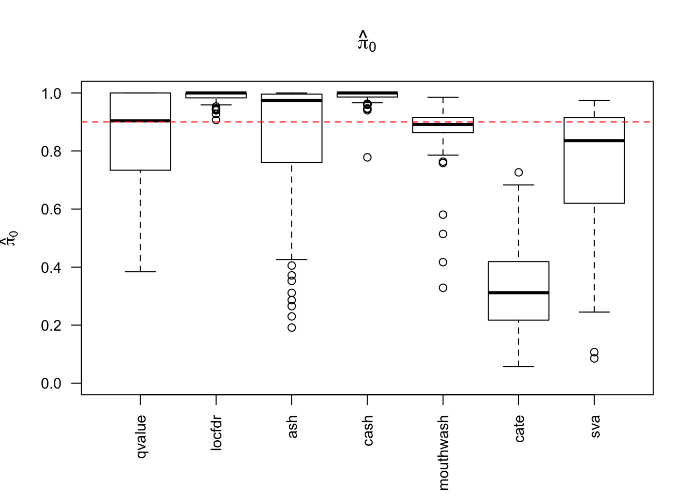
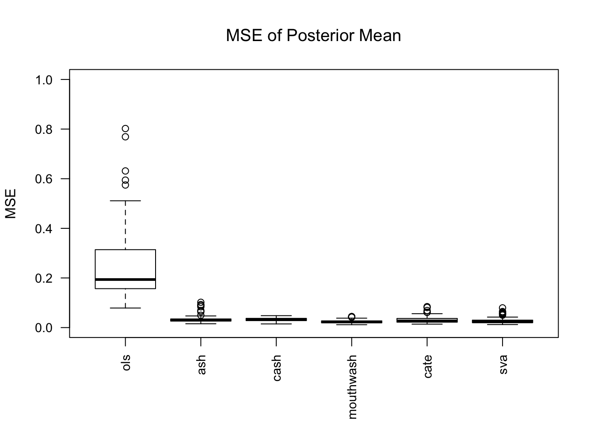
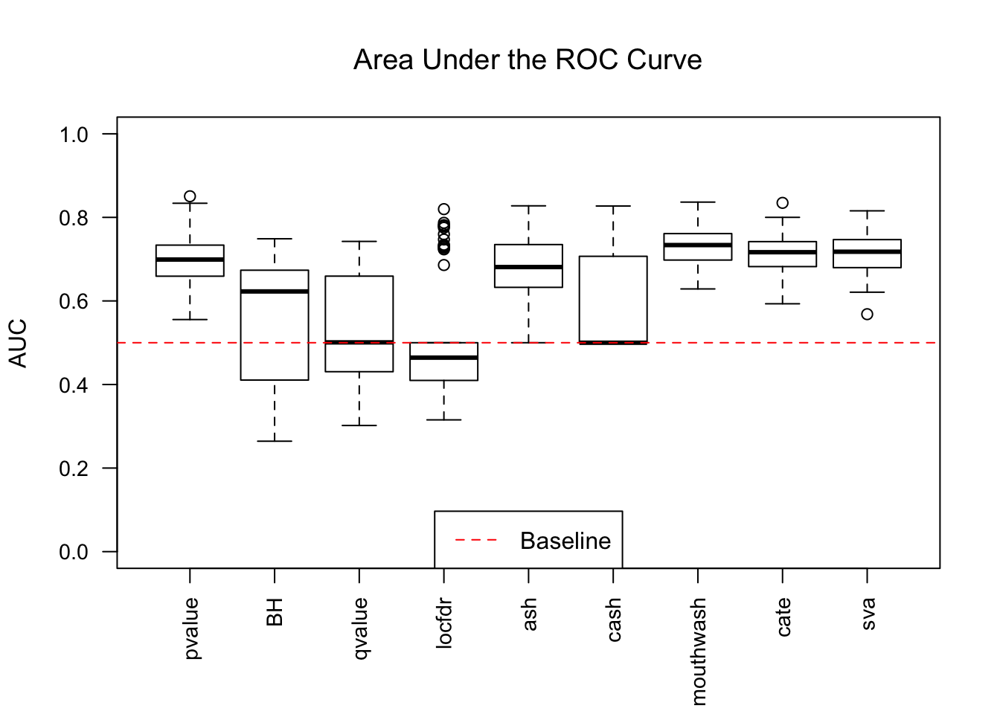
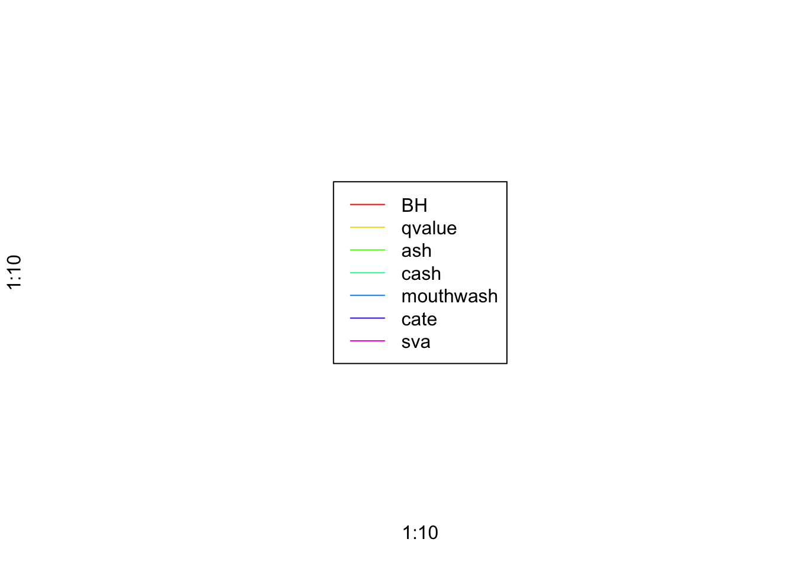
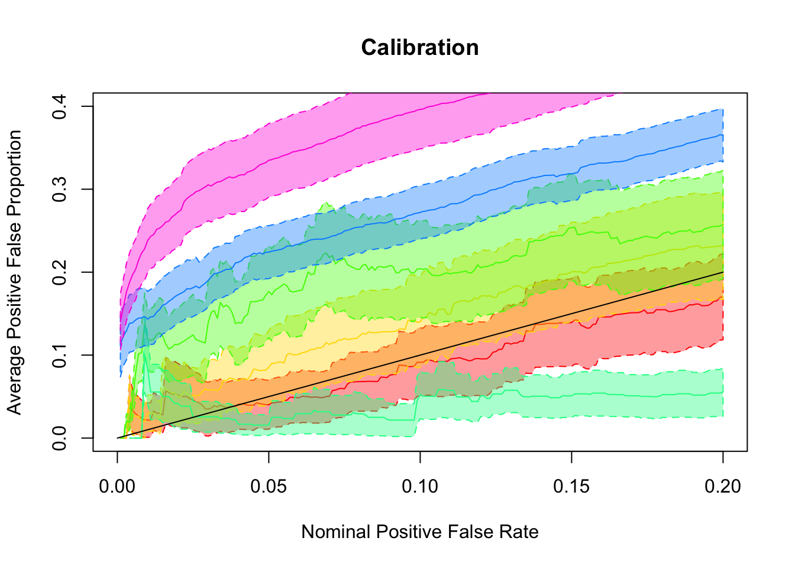
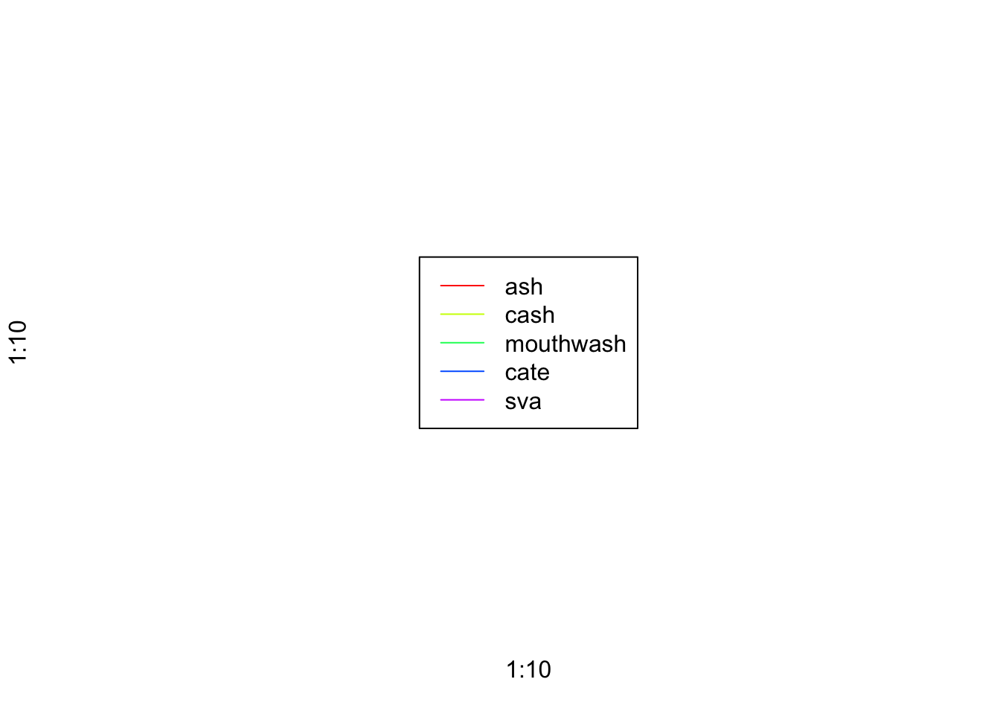
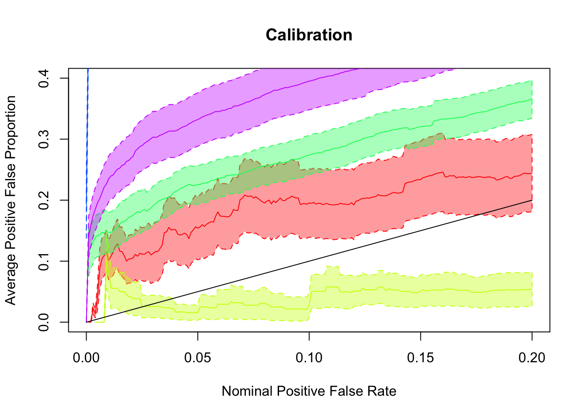

Last updated: 2017-11-05
Code version: 6639968
library(edgeR)Warning: package 'edgeR' was built under R version 3.4.2Warning: package 'limma' was built under R version 3.4.2library(limma)
library(sva)Warning: package 'sva' was built under R version 3.4.2Warning: package 'mgcv' was built under R version 3.4.2Warning: package 'genefilter' was built under R version 3.4.2Warning: package 'BiocParallel' was built under R version 3.4.2library(cate)
library(vicar)
library(ashr)
library(pROC)
source("../code/gdash.R")Warning: package 'SQUAREM' was built under R version 3.4.2mat = readRDS("../data/liver.sim.rds")counts_to_summary = function (counts, design) {
dgecounts = edgeR::calcNormFactors(edgeR::DGEList(counts = counts, group = design[, 2]))
v = limma::voom(dgecounts, design, plot = FALSE)
lim = limma::lmFit(v)
r.ebayes = limma::eBayes(lim)
p = r.ebayes$p.value[, 2]
t = r.ebayes$t[, 2]
z = sign(t) * qnorm(1 - p/2)
betahat = lim$coefficients[,2]
sebetahat = betahat / z
return (list(betahat = betahat, sebetahat = sebetahat, z = z))
}one_sim <- function (mat, ngene, nsamp, pi0, sd) {
## add simulated signals
mat.sim = seqgendiff::poisthin(t(mat), nsamp = nsamp, ngene = ngene, gselect = "random", signal_params = list(mean = 0, sd = sd), prop_null = pi0)
counts = t(mat.sim$Y) ## ngene * nsamples matrix
design = mat.sim$X
beta = mat.sim$beta
which_signal = (beta != 0)
## methods using summary statistics only
summary = counts_to_summary(counts, design)
fit.pvalue = (1 - pnorm(abs(summary$z))) * 2
fit.BH = p.adjust(fit.pvalue, method = "BH")
fit.qvalue = qvalue::qvalue(fit.pvalue)
fit.locfdr = locfdr::locfdr(summary$z, bre = round(ngene / 20), plot = 0)
fit.ash = ashr::ash(summary$betahat, summary$sebetahat, mixcompdist = "normal", method = "fdr")
fit.gdash = gdash(summary$betahat, summary$sebetahat)
fit.gdash.ash = ashr::ash(summary$betahat, summary$sebetahat, fixg = TRUE, g = fit.gdash$fitted_g)
## methods using data matrix
Y = t(log(counts + 0.5))
X = design
num_sv <- sva::num.sv(dat = t(Y), mod = X, method = "be")
mout <- vicar::mouthwash(Y = Y, X = X, k = num_sv, cov_of_interest = 2, include_intercept = FALSE)
cate_cate <- cate::cate.fit(X.primary = X[, 2, drop = FALSE], X.nuis = X[, -2, drop = FALSE], Y = Y, r = num_sv, adj.method = "rr")
sva_sva <- sva::sva(dat = t(Y), mod = X, mod0 = X[, -2, drop = FALSE], n.sv = num_sv)
X.sva <- cbind(X, sva_sva$sv)
lmout <- limma::lmFit(object = t(Y), design = X.sva)
eout <- limma::ebayes(lmout)
svaout <- list()
svaout$betahat <- lmout$coefficients[, 2]
svaout$sebetahat <- lmout$stdev.unscaled[, 2] * sqrt(eout$s2.post)
svaout$pvalues <- eout$p.value[, 2]
## result: roc auc
roc_res = c(
pvalue = pROC::roc(response = which_signal, predictor = fit.pvalue)$auc,
BH = pROC::roc(response = which_signal, predictor = fit.BH)$auc,
qvalue = pROC::roc(response = which_signal, predictor = fit.qvalue$lfdr)$auc,
locfdr = pROC::roc(response = which_signal, predictor = fit.locfdr$fdr)$auc,
ash = pROC::roc(response = which_signal, predictor = ashr::get_lfdr(fit.ash))$auc,
cash = pROC::roc(response = which_signal, predictor = ashr::get_lfdr(fit.gdash.ash))$auc,
mouthwash = pROC::roc(response = which_signal, predictor = c(mout$result$lfdr))$auc,
cate = pROC::roc(response = which_signal, predictor = c(cate_cate$beta.p.value))$auc,
sva = pROC::roc(response = which_signal, predictor = c(svaout$pvalues))$auc
)
## ash with summary statistics
method_list <- list()
method_list$cate <- list()
method_list$cate$betahat <- c(cate_cate$beta)
method_list$cate$sebetahat <- c(sqrt(cate_cate$beta.cov.row * cate_cate$beta.cov.col) / sqrt(nrow(X)))
method_list$sva <- list()
method_list$sva$betahat <- c(svaout$betahat)
method_list$sva$sebetahat <- c(svaout$sebetahat)
ashfit <- lapply(method_list, FUN = function(x) {ashr::ash(x$betahat, x$sebetahat, mixcompdist = "normal", method = "fdr")})
ashfit$ash <- fit.ash
ashfit$cash <- fit.gdash.ash
ashfit$mouthwash <- mout
ashfit = ashfit[c("ash", "cash", "mouthwash", "cate", "sva")]
## pi0
pi0_res <- sapply(ashfit, FUN = ashr::get_pi0)
pi0_res <- c(
qvalue = fit.qvalue$pi0,
locfdr = min(1, fit.locfdr$fp0["mlest", "p0"]),
pi0_res
)
## mse
mse_res <- sapply(ashfit, FUN = function(x) {mean((ashr::get_pm(x) - beta)^2)})
mse_res <- c(ols = mean((summary$betahat - beta)^2), mse_res)
## pFDP calibration
pFDP_alpha = function (alpha, tail_stat, true, obs) {
return(1 - mean(true[tail_stat <= alpha]))
}
pFSP_alpha = function (alpha, tail_stat, true, obs) {
return(mean(sign(obs[tail_stat <= alpha]) != sign(true[tail_stat <= alpha])))
}
tail_cali_list = function (alpha_list, tail_cali_alpha, tail_stat, true, obs) {
sapply(alpha_list, tail_cali_alpha, tail_stat, true, obs)
}
alpha_list = seq(0, 0.2, by = 0.001)
pFDP <- sapply(
ashfit, FUN = function (x) {
tail_cali_list(alpha_list, pFDP_alpha, ashr::get_qvalue(x), which_signal, x$data$x)
}
)
pFDP_BH = tail_cali_list(alpha_list, pFDP_alpha, fit.BH, which_signal, summary$betahat)
pFDP_qvalue = tail_cali_list(alpha_list, pFDP_alpha, fit.qvalue$qvalues, which_signal, summary$betahat)
pFDP_res = cbind(BH = pFDP_BH, qvalue = pFDP_qvalue, pFDP)
## pFSR calibration
pFSP_res <- sapply(
ashfit, FUN = function (x) {
tail_cali_list(alpha_list, pFSP_alpha, ashr::get_svalue(x), beta, x$data$x)
}
)
return(list(pi = pi0_res, mse = mse_res, auc = roc_res, alpha = alpha_list, pFDP = pFDP_res, pFSP = pFSP_res))
}n_sim = function (n, mat, ngene, nsamp, pi0, sd) {
pi0_list = mse_list = auc_list = pFDP_list = pFSP_list = list()
for (i in 1 : n) {
one_res = one_sim(mat, ngene, nsamp, pi0, sd)
pi0_list[[i]] = one_res$pi
mse_list[[i]] = one_res$mse
auc_list[[i]] = one_res$auc
pFDP_list[[i]] = one_res$pFDP
pFSP_list[[i]] = one_res$pFSP
}
alpha_vec = one_res$alpha
pi0_mat = matrix(unlist(pi0_list), nrow = n, byrow = TRUE)
colnames(pi0_mat) = names(pi0_list[[1]])
mse_mat = matrix(unlist(mse_list), nrow = n, byrow = TRUE)
colnames(mse_mat) = names(mse_list[[1]])
auc_mat = matrix(unlist(auc_list), nrow = n, byrow = TRUE)
colnames(auc_mat) = names(auc_list[[1]])
pFDP_mat = list()
for (j in 1 : ncol(pFDP_list[[1]])) {
pFDP_mat[[j]] = t(sapply(pFDP_list, FUN = function(x) {rbind(x[, j])}))
}
names(pFDP_mat) = colnames(pFDP_list[[1]])
pFSP_mat = list()
for (j in 1 : ncol(pFSP_list[[1]])) {
pFSP_mat[[j]] = t(sapply(pFSP_list, FUN = function(x) {rbind(x[, j])}))
}
names(pFSP_mat) = colnames(pFSP_list[[1]])
return(list(pi0 = pi0_mat, mse = mse_mat, auc = auc_mat, alpha = alpha_vec, pFDP = pFDP_mat, pFSP = pFSP_mat))
}sd = 0.6
pi0 = 0.9
ngene = 1e3
nsamp = 10
nsim = 100
set.seed(777)
system.time(res <- n_sim(nsim, mat, ngene, nsamp, pi0, sd))Number of significant surrogate variables is: 2
Iteration (out of 5 ):1 2 3 4 5 Number of significant surrogate variables is: 2
Iteration (out of 5 ):1 2 3 4 5 Number of significant surrogate variables is: 2
Iteration (out of 5 ):1 2 3 4 5 Number of significant surrogate variables is: 2
Iteration (out of 5 ):1 2 3 4 5 Warning in locfdr::locfdr(summary$z, bre = round(ngene/20), plot = 0): CM
estimation failed, middle of histogram non-normalNumber of significant surrogate variables is: 1
Iteration (out of 5 ):1 2 3 4 5 Number of significant surrogate variables is: 2
Iteration (out of 5 ):1 2 3 4 5 Warning in locfdr::locfdr(summary$z, bre = round(ngene/20), plot = 0): CM
estimation failed, middle of histogram non-normalNumber of significant surrogate variables is: 2
Iteration (out of 5 ):1 2 3 4 5 Number of significant surrogate variables is: 2
Iteration (out of 5 ):1 2 3 4 5 Warning in locfdr::locfdr(summary$z, bre = round(ngene/20), plot = 0): CM
estimation failed, middle of histogram non-normalNumber of significant surrogate variables is: 2
Iteration (out of 5 ):1 2 3 4 5 Number of significant surrogate variables is: 2
Iteration (out of 5 ):1 2 3 4 5 Number of significant surrogate variables is: 2
Iteration (out of 5 ):1 2 3 4 5 Number of significant surrogate variables is: 3
Iteration (out of 5 ):1 2 3 4 5 Number of significant surrogate variables is: 2
Iteration (out of 5 ):1 2 3 4 5 Warning in locfdr::locfdr(summary$z, bre = round(ngene/20), plot = 0): CM
estimation failed, middle of histogram non-normalNumber of significant surrogate variables is: 2
Iteration (out of 5 ):1 2 3 4 5 Number of significant surrogate variables is: 3
Iteration (out of 5 ):1 2 3 4 5 Number of significant surrogate variables is: 2
Iteration (out of 5 ):1 2 3 4 5 Number of significant surrogate variables is: 2
Iteration (out of 5 ):1 2 3 4 5 Number of significant surrogate variables is: 2
Iteration (out of 5 ):1 2 3 4 5 Number of significant surrogate variables is: 2
Iteration (out of 5 ):1 2 3 4 5 Number of significant surrogate variables is: 3
Iteration (out of 5 ):1 2 3 4 5 Number of significant surrogate variables is: 2
Iteration (out of 5 ):1 2 3 4 5 Number of significant surrogate variables is: 3
Iteration (out of 5 ):1 2 3 4 5 Number of significant surrogate variables is: 2
Iteration (out of 5 ):1 2 3 4 5 Warning in locfdr::locfdr(summary$z, bre = round(ngene/20), plot = 0): CM
estimation failed, middle of histogram non-normalNumber of significant surrogate variables is: 1
Iteration (out of 5 ):1 2 3 4 5 Number of significant surrogate variables is: 2
Iteration (out of 5 ):1 2 3 4 5 Number of significant surrogate variables is: 3
Iteration (out of 5 ):1 2 3 4 5 Number of significant surrogate variables is: 2
Iteration (out of 5 ):1 2 3 4 5 Warning in locfdr::locfdr(summary$z, bre = round(ngene/20), plot = 0): CM
estimation failed, middle of histogram non-normalNumber of significant surrogate variables is: 2
Iteration (out of 5 ):1 2 3 4 5 Warning in locfdr::locfdr(summary$z, bre = round(ngene/20), plot = 0): CM
estimation failed, middle of histogram non-normalNumber of significant surrogate variables is: 2
Iteration (out of 5 ):1 2 3 4 5 Number of significant surrogate variables is: 2
Iteration (out of 5 ):1 2 3 4 5 Number of significant surrogate variables is: 2
Iteration (out of 5 ):1 2 3 4 5 Number of significant surrogate variables is: 2
Iteration (out of 5 ):1 2 3 4 5 Number of significant surrogate variables is: 1
Iteration (out of 5 ):1 2 3 4 5 Number of significant surrogate variables is: 2
Iteration (out of 5 ):1 2 3 4 5 Number of significant surrogate variables is: 1
Iteration (out of 5 ):1 2 3 4 5 Number of significant surrogate variables is: 3
Iteration (out of 5 ):1 2 3 4 5 Number of significant surrogate variables is: 1
Iteration (out of 5 ):1 2 3 4 5 Number of significant surrogate variables is: 3
Iteration (out of 5 ):1 2 3 4 5 Number of significant surrogate variables is: 3
Iteration (out of 5 ):1 2 3 4 5 Number of significant surrogate variables is: 2
Iteration (out of 5 ):1 2 3 4 5 Number of significant surrogate variables is: 2
Iteration (out of 5 ):1 2 3 4 5 Number of significant surrogate variables is: 2
Iteration (out of 5 ):1 2 3 4 5 Number of significant surrogate variables is: 2
Iteration (out of 5 ):1 2 3 4 5 Number of significant surrogate variables is: 2
Iteration (out of 5 ):1 2 3 4 5 Number of significant surrogate variables is: 1
Iteration (out of 5 ):1 2 3 4 5 Number of significant surrogate variables is: 2
Iteration (out of 5 ):1 2 3 4 5 Number of significant surrogate variables is: 2
Iteration (out of 5 ):1 2 3 4 5 Number of significant surrogate variables is: 2
Iteration (out of 5 ):1 2 3 4 5 Number of significant surrogate variables is: 2
Iteration (out of 5 ):1 2 3 4 5 Number of significant surrogate variables is: 2
Iteration (out of 5 ):1 2 3 4 5 Number of significant surrogate variables is: 2
Iteration (out of 5 ):1 2 3 4 5 Number of significant surrogate variables is: 2
Iteration (out of 5 ):1 2 3 4 5 Number of significant surrogate variables is: 2
Iteration (out of 5 ):1 2 3 4 5 Number of significant surrogate variables is: 1
Iteration (out of 5 ):1 2 3 4 5 Warning in locfdr::locfdr(summary$z, bre = round(ngene/20), plot = 0): CM
estimation failed, middle of histogram non-normalNumber of significant surrogate variables is: 2
Iteration (out of 5 ):1 2 3 4 5 Number of significant surrogate variables is: 2
Iteration (out of 5 ):1 2 3 4 5 Warning in locfdr::locfdr(summary$z, bre = round(ngene/20), plot = 0): CM
estimation failed, middle of histogram non-normalWarning in log(rowSums(sweep(x = exp(ldmix - ldmax), MARGIN = 2, STATS =
pi_vals, : NaNs producedNumber of significant surrogate variables is: 2
Iteration (out of 5 ):1 2 3 4 5 Number of significant surrogate variables is: 2
Iteration (out of 5 ):1 2 3 4 5 Number of significant surrogate variables is: 2
Iteration (out of 5 ):1 2 3 4 5 Number of significant surrogate variables is: 3
Iteration (out of 5 ):1 2 3 4 5 Number of significant surrogate variables is: 3
Iteration (out of 5 ):1 2 3 4 5 Warning in locfdr::locfdr(summary$z, bre = round(ngene/20), plot = 0): CM
estimation failed, middle of histogram non-normalNumber of significant surrogate variables is: 3
Iteration (out of 5 ):1 2 3 4 5 Number of significant surrogate variables is: 2
Iteration (out of 5 ):1 2 3 4 5 Number of significant surrogate variables is: 3
Iteration (out of 5 ):1 2 3 4 5 Number of significant surrogate variables is: 2
Iteration (out of 5 ):1 2 3 4 5 Number of significant surrogate variables is: 2
Iteration (out of 5 ):1 2 3 4 5 Number of significant surrogate variables is: 2
Iteration (out of 5 ):1 2 3 4 5 Number of significant surrogate variables is: 2
Iteration (out of 5 ):1 2 3 4 5 Warning in locfdr::locfdr(summary$z, bre = round(ngene/20), plot = 0): CM
estimation failed, middle of histogram non-normalNumber of significant surrogate variables is: 3
Iteration (out of 5 ):1 2 3 4 5 Number of significant surrogate variables is: 3
Iteration (out of 5 ):1 2 3 4 5 Number of significant surrogate variables is: 2
Iteration (out of 5 ):1 2 3 4 5 Warning in locfdr::locfdr(summary$z, bre = round(ngene/20), plot = 0): CM
estimation failed, middle of histogram non-normalNumber of significant surrogate variables is: 2
Iteration (out of 5 ):1 2 3 4 5 Warning in locfdr::locfdr(summary$z, bre = round(ngene/20), plot = 0): CM
estimation failed, middle of histogram non-normalNumber of significant surrogate variables is: 3
Iteration (out of 5 ):1 2 3 4 5 Number of significant surrogate variables is: 3
Iteration (out of 5 ):1 2 3 4 5 Number of significant surrogate variables is: 2
Iteration (out of 5 ):1 2 3 4 5 Warning in locfdr::locfdr(summary$z, bre = round(ngene/20), plot = 0): CM
estimation failed, middle of histogram non-normalNumber of significant surrogate variables is: 2
Iteration (out of 5 ):1 2 3 4 5 Warning in locfdr::locfdr(summary$z, bre = round(ngene/20), plot = 0): CM
estimation failed, middle of histogram non-normalNumber of significant surrogate variables is: 2
Iteration (out of 5 ):1 2 3 4 5 Number of significant surrogate variables is: 2
Iteration (out of 5 ):1 2 3 4 5 Number of significant surrogate variables is: 2
Iteration (out of 5 ):1 2 3 4 5 Number of significant surrogate variables is: 3
Iteration (out of 5 ):1 2 3 4 5 Warning in locfdr::locfdr(summary$z, bre = round(ngene/20), plot = 0): CM
estimation failed, middle of histogram non-normalNumber of significant surrogate variables is: 3
Iteration (out of 5 ):1 2 3 4 5 Number of significant surrogate variables is: 2
Iteration (out of 5 ):1 2 3 4 5 Number of significant surrogate variables is: 2
Iteration (out of 5 ):1 2 3 4 5 Warning in locfdr::locfdr(summary$z, bre = round(ngene/20), plot = 0): CM
estimation failed, middle of histogram non-normalNumber of significant surrogate variables is: 2
Iteration (out of 5 ):1 2 3 4 5 Number of significant surrogate variables is: 2
Iteration (out of 5 ):1 2 3 4 5 Number of significant surrogate variables is: 2
Iteration (out of 5 ):1 2 3 4 5 Warning in locfdr::locfdr(summary$z, bre = round(ngene/20), plot = 0): CM
estimation failed, middle of histogram non-normalNumber of significant surrogate variables is: 2
Iteration (out of 5 ):1 2 3 4 5 Number of significant surrogate variables is: 3
Iteration (out of 5 ):1 2 3 4 5 Number of significant surrogate variables is: 2
Iteration (out of 5 ):1 2 3 4 5 Number of significant surrogate variables is: 2
Iteration (out of 5 ):1 2 3 4 5 Number of significant surrogate variables is: 2
Iteration (out of 5 ):1 2 3 4 5 Number of significant surrogate variables is: 2
Iteration (out of 5 ):1 2 3 4 5 Number of significant surrogate variables is: 2
Iteration (out of 5 ):1 2 3 4 5 Number of significant surrogate variables is: 2
Iteration (out of 5 ):1 2 3 4 5 Number of significant surrogate variables is: 2
Iteration (out of 5 ):1 2 3 4 5 Number of significant surrogate variables is: 2
Iteration (out of 5 ):1 2 3 4 5 Number of significant surrogate variables is: 2
Iteration (out of 5 ):1 2 3 4 5 Number of significant surrogate variables is: 3
Iteration (out of 5 ):1 2 3 4 5 Number of significant surrogate variables is: 2
Iteration (out of 5 ):1 2 3 4 5 Number of significant surrogate variables is: 3
Iteration (out of 5 ):1 2 3 4 5 user system elapsed
1703.469 381.549 2135.044 

sessionInfo()R version 3.4.1 (2017-06-30)
Platform: x86_64-apple-darwin15.6.0 (64-bit)
Running under: macOS Sierra 10.12.6
Matrix products: default
BLAS: /Library/Frameworks/R.framework/Versions/3.4/Resources/lib/libRblas.0.dylib
LAPACK: /Library/Frameworks/R.framework/Versions/3.4/Resources/lib/libRlapack.dylib
locale:
[1] en_US.UTF-8/en_US.UTF-8/en_US.UTF-8/C/en_US.UTF-8/en_US.UTF-8
attached base packages:
[1] stats graphics grDevices utils datasets methods base
other attached packages:
[1] Rmosek_7.1.3 PolynomF_0.94 cvxr_0.0.0.9009
[4] REBayes_0.85 Matrix_1.2-11 SQUAREM_2017.10-1
[7] EQL_1.0-0 ttutils_1.0-1 pROC_1.10.0
[10] ashr_2.1-27 vicar_0.1.6 cate_1.0.4
[13] sva_3.26.0 BiocParallel_1.12.0 genefilter_1.60.0
[16] mgcv_1.8-22 nlme_3.1-131 edgeR_3.20.1
[19] limma_3.34.0
loaded via a namespace (and not attached):
[1] Biobase_2.38.0 svd_0.4.1 bit64_0.9-7
[4] splines_3.4.1 foreach_1.4.3 stats4_3.4.1
[7] blob_1.1.0 yaml_2.1.14 RSQLite_2.0
[10] backports_1.1.1 lattice_0.20-35 digest_0.6.12
[13] colorspace_1.3-2 htmltools_0.3.6 plyr_1.8.4
[16] XML_3.98-1.9 esaBcv_1.2.1 xtable_1.8-2
[19] corpcor_1.6.9 scales_0.5.0 git2r_0.19.0
[22] tibble_1.3.4 annotate_1.56.0 IRanges_2.12.0
[25] ggplot2_2.2.1 BiocGenerics_0.24.0 lazyeval_0.2.1
[28] survival_2.41-3 magrittr_1.5 memoise_1.1.0
[31] evaluate_0.10.1 doParallel_1.0.11 MASS_7.3-47
[34] truncnorm_1.0-7 tools_3.4.1 matrixStats_0.52.2
[37] stringr_1.2.0 S4Vectors_0.16.0 munsell_0.4.3
[40] locfit_1.5-9.1 AnnotationDbi_1.40.0 compiler_3.4.1
[43] rlang_0.1.4 grid_3.4.1 leapp_1.2
[46] RCurl_1.95-4.8 iterators_1.0.8 bitops_1.0-6
[49] rmarkdown_1.6 gtable_0.2.0 codetools_0.2-15
[52] DBI_0.7 ruv_0.9.6 knitr_1.17
[55] bit_1.1-12 rprojroot_1.2 stringi_1.1.5
[58] pscl_1.5.2 parallel_3.4.1 Rcpp_0.12.13 This R Markdown site was created with workflowr